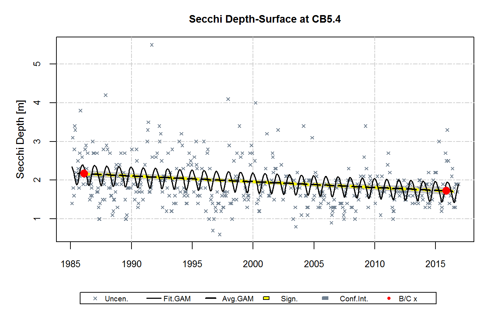
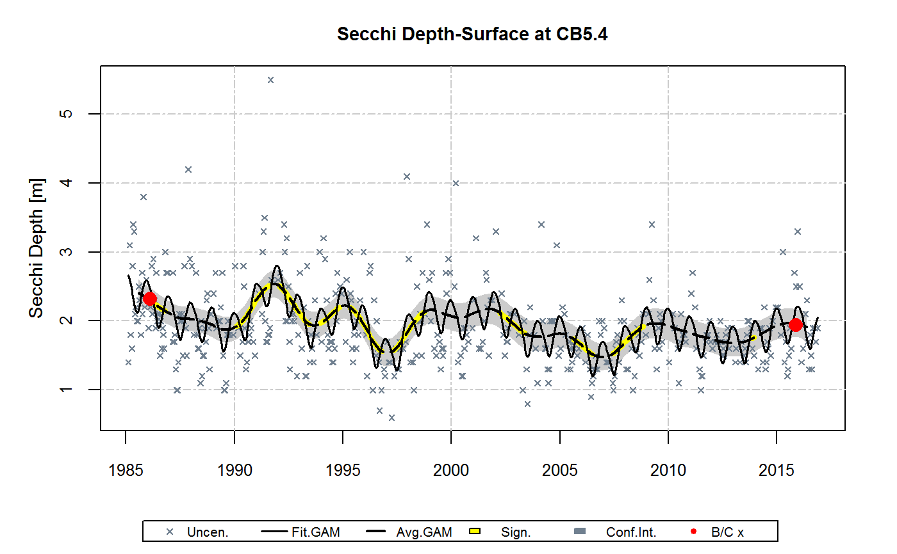
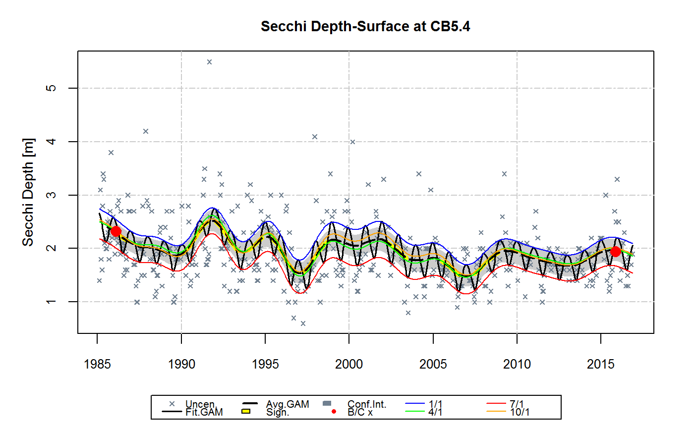

Perform GAM analysis. Relies on mgcv::gam to perform general additive model.
gamTest(df, dep, stat, layer = NA, analySpec, gamTable = TRUE, gamPlot = 10, gamDiffModel = NA, flow.detrended = NA, salinity.detrended = NA)
| df | data frame |
|---|---|
| dep | dependent variable |
| stat | station |
| layer | layer (optional) |
| analySpec | analytical specifications |
| gamTable | gam table setting (set to FALSE to turn off table output) |
| gamPlot | gam plot setting (set to FALSE to turn off plotting) |
| gamDiffModel | GAM model(s) used for computing differences on sub-annual/multi-period basis |
| flow.detrended | data generated by detrended.flow. Default = NA. |
| salinity.detrended | data generated by detrended.flow. Default = NA. |
Returns a list with results
The baseDay function has been added to this package from the smwrBase package.
# specify parameter and station to analyze dep <- 'secchi' stat <- 'CB5.4' layer <- 'S' #Using gamTest dfr <- analysisOrganizeData (dataCensored)#> #> ### Record Count #> #> #> #> #> `Beginning Number of Records: 13062` #> #> #> #> `Number of Records After Processing: 13062` #> #> #> #> #> ### Parameters #> #> #> #> #> *Table: List of Parameters.* #> #> #> #> #> #> Dep. Var. Parameter Name Units Log Tran. GAM Dep. Var. #> --------- ---------------------------- ----- --------- ------------- #> secchi Secchi Depth m FALSE secchi #> chla Chlorophyll a (Corrected) ug/L TRUE lnchla #> do Dissolved Oxygen mg/L FALSE do #> tn Total Nitrogen mg/L TRUE lntn #> tp Total Phosphorus mg/L TRUE lntp #> po4 Orthophosphorus mg/L TRUE lnpo4 #> tdp Total Dissolved Phosphorus mg/L TRUE lntdp #> no23 Nitrite + Nitrate mg/L TRUE lnno23 #> nh4 Ammonium mg/L TRUE lnnh4 #> tdn Total Dissolved Nitrogen mg/L TRUE lntdn #> din Dissolved Inorganic Nitrogen mg/L TRUE lndin #> salinity Salinity ppt FALSE salinity #> tss Total Suspended Solids mg/L TRUE lntss #> wtemp Water Temperature deg C FALSE wtemp #> #> ### Layers #> #> #> #> #> *Table: List of Layers.* #> #> #> #> #> #> Layer ID Layer Name #> -------- ---------------- #> S Surface #> AP Above Pycnocline #> BP Below Pycnocline #> B Bottom #> #> ## #> #> ### Stations #> #> #> #> #> *Table: List of Stations.* #> #> #> #> #> #> Station ID Latitude Longitude CB 92 Seg. Flow Adj. Gage Mth. Group #> ---------- -------- --------- ---------- -------------- ---------- #> CB3.3C 38.9960 -76.3597 CB3MH 01578310 MD-Main #> CB4.1C 38.8259 -76.3995 CB4MH 01578310 MD-Main #> CB5.4 37.8001 -76.1747 CB5MH_VA 01578310 VA-All #> TF5.5 37.3126 -77.2328 JMSTF1 02035000 VA-All #> EE2.1 38.6549 -76.2643 CHOMH1 01491000 MD-Trib #> EE3.0 38.2809 -76.0103 FSBMH 01578310 MD-Trib #> TF2.2 38.6907 -77.1111 POTTF_MD 01646500 MD-Potomac #> LE2.2 38.1576 -76.5980 POTMH_MD 01646500 MD-Potomacdf <- dfr[[1]] analySpec <- dfr[[2]] gamResult <- gamTest(df, dep, stat, layer, analySpec=analySpec)#> #> #### Secchi Depth - Linear Trend with Seasonality#> #> #> #> #> *Table: GAM Analysis of Variance.* #> #> #> #> #> #> |Type | Source| edf| F-stat| p-value| #> |:----------------|------:|----:|-------:|-------:| #> |parametric terms | cyear| 1.00| 30.4598| <0.0001| #> |smoothed terms | s(doy)| 3.24| 6.3729| <0.0001| #> #> #> #> #> *Table: GAM Parameter Coefficients.* #> #> #> #> #> #> |Parameter | Estimate| Std. Err.| t value| p-value| #> |:-----------|---------:|---------:|-------:|-------:| #> |(Intercept) | 1.889172| 0.025831| 73.1362| <0.0001| #> |cyear | -0.014872| 0.002695| -5.5190| <0.0001| #> #> #> #> #> *Table: GAM Diagnostics.* #> #> #> #> #> #> | AIC| RMSE| Adj. R-squared| #> |------:|------:|--------------:| #> | 744.93| 0.5462| 0.1538| #> #> #> #> #> *Table: Estimates of Change from 1985-2016.* #> #> #> #> #> #> |Calculation | Estimate | #> |:--------------------------------------------|:-------------------:| #> |Baseline mean | 2.1679 | #> |Current mean | 1.7217 | #> |Estimated difference | -0.4462 | #> |Std. Err. difference | 0.0808 | #> |95% Confidence interval for difference | (-0.6046 , -0.2877) | #> |Difference p-value | <0.0001 | #> |Period of Record Percent Change Estimate (%) | -20.58% | #> #> #### Secchi Depth - Non-linear Trend with Seasonality#> #> #> #> #> *Table: GAM Analysis of Variance.* #> #> #> #> #> #> |Type | Source| edf| F-stat| p-value| #> |:----------------|--------:|-----:|------:|-------:| #> |parametric terms | cyear| 1.00| 0.7937| 0.3735| #> |smoothed terms | s(cyear)| 18.62| 3.9457| <0.0001| #> |" " | s(doy)| 3.32| 8.2502| <0.0001| #> #> #> #> #> *Table: GAM Parameter Coefficients.* #> #> #> #> #> #> |Parameter | Estimate| Std. Err.| t value| p-value| #> |:-----------|---------:|---------:|-------:|-------:| #> |(Intercept) | 1.739485| 0.187651| 9.2698| <0.0001| #> |cyear | -0.152913| 0.171637| -0.8909| 0.3735| #> #> #> #> #> *Table: GAM Diagnostics.* #> #> #> #> #> #> | AIC| RMSE| Adj. R-squared| #> |------:|------:|--------------:| #> | 700.14| 0.5096| 0.2635| #> #> #> #> #> *Table: Estimates of Change from 1985-2016.* #> #> #> #> #> #> |Calculation | Estimate | #> |:--------------------------------------------|:-------------------:| #> |Baseline mean | 2.3224 | #> |Current mean | 1.9368 | #> |Estimated difference | -0.3856 | #> |Std. Err. difference | 0.1225 | #> |95% Confidence interval for difference | (-0.6257 , -0.1455) | #> |Difference p-value | 0.0018 | #> |Period of Record Percent Change Estimate (%) | -16.6% | #> #> #### Secchi Depth - Non-linear trend with Seas+Int#> #> #> #> #> *Table: GAM Analysis of Variance.* #> #> #> #> #> #> |Type | Source| edf| F-stat| p-value| #> |:----------------|-------------:|-----:|------:|-------:| #> |parametric terms | cyear| 1.00| 0.8417| 0.3594| #> |smoothed terms | s(cyear)| 18.60| 3.9401| <0.0001| #> |" " | s(doy)| 3.30| 8.2531| <0.0001| #> |" " | ti(cyear,doy)| 1.66| 0.2913| 0.0814| #> #> #> #> #> *Table: GAM Parameter Coefficients.* #> #> #> #> #> #> |Parameter | Estimate| Std. Err.| t value| p-value| #> |:-----------|---------:|---------:|-------:|-------:| #> |(Intercept) | 1.733402| 0.187507| 9.2445| <0.0001| #> |cyear | -0.157346| 0.171509| -0.9174| 0.3594| #> #> #> #> #> *Table: GAM Diagnostics.* #> #> #> #> #> #> | AIC| RMSE| Adj. R-squared| #> |------:|------:|--------------:| #> | 698.04| 0.5076| 0.2693| #> #> #> #> #> *Table: Estimates of Change from 1985-2016.* #> #> #> #> #> #> |Calculation | Estimate | #> |:--------------------------------------------|:-------------------:| #> |Baseline mean | 2.3199 | #> |Current mean | 1.9361 | #> |Estimated difference | -0.3838 | #> |Std. Err. difference | 0.1222 | #> |95% Confidence interval for difference | (-0.6233 , -0.1442) | #> |Difference p-value | 0.0018 | #> |Period of Record Percent Change Estimate (%) | -16.54% |